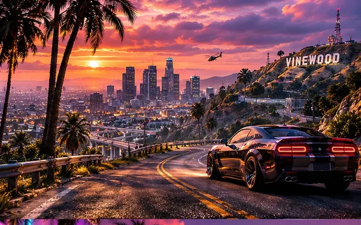

✦ ELARIO STUDIOS PRESENTSTEAM JURA
TEAM JURA
ATLAS
MAPS · HEISTS · VEHICLES · COLLECTIBLES · ROUTES · PROGRESS
◎ INTERACTIVE MAP EXPLORER
Choose a world to open its existing working map engine.

LOS SANTOSGTA V · Story
⚡ QUICK ACCESS HUB
All tools · All games · One click
✦ FEATURED CONTENT
▤ DEVELOPMENT STATUS
GTAE Studio Dashboard · Original cinematic world covers · All map links open the real Atlas workspace
Open existing test center ↗◉ MY ATLAS PROGRESS
Open your existing progress tracker; no fictional progress totals displayed.
View actual progress ↗